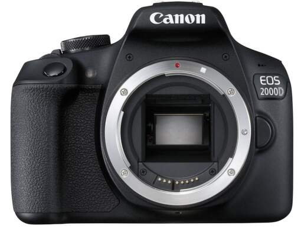
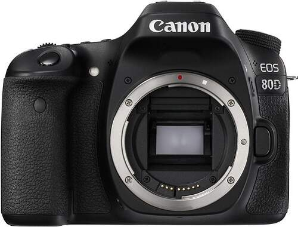
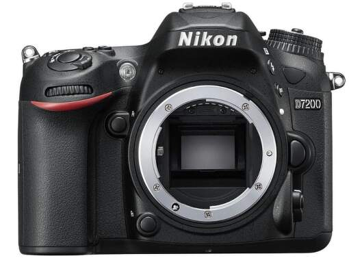
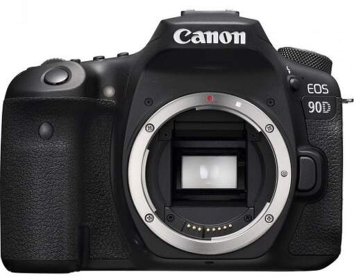

Digitálna zrkadlovka dodávaná bez objektívu disponuje LCD displejom, snímačom CMOS typu APS-C a obrazovým procesorom DIGIC 4+. Umožňuje kontinuálne snímanie rýchlosťou 3 sn/s. Zrkadlovka s citlivosťou ISO 100 až 6400 ponúka automatický inteligentný scénický režim, kreatívne filtre a režim Video Snapshot. K dispozícií tiež 9-bodové automatické zaostrovanie, integrovaný sprievodca funkciami a nastaveniami či optický hľadáčik. Zrkadlovka s podporou Wi-fi poskytuje video v rozlíšení Full HD/1080p s frekvenciou 30 snímok za sekundu.
Parametre:
Uhlopriečka: 2,7 "
Rozlíšenie: 18 mpx
Typ batérie: Li-Ion
Kapacita batérie: 860 mAh
Cena: 299,00 €
CANON EOS 2000D TELO

CANON EOS 2000D
Digitálna zrkadlovka disponuje LCD displejom, snímačom CMOS typu APS-C a obrazovým procesorom DIGIC 4+. Umožňuje kontinuálne snímanie rýchlosťou 3 sn/s. Zrkadlovka s citlivosťou ISO 100 až 6400 ponúka automatický inteligentný scénický režim, kreatívne filtre a režim Video Snapshot. K dispozícií tiež 9-bodové automatické zaostrovanie, integrovaný sprievodca funkciami a nastaveniami či optický hľadáčik. Zrkadlovka s podporou Wifi, NFC poskytuje filmy v rozlíšení Full HD s frekvenciou 30 snímok za sekundu.
Parametre:
Uhlopriečka: 3 "
Rozlíšenie: 24,1 mpx
Typ batérie: Li-Ion
Kapacita batérie: 860 mAh
Cena: 389,00 €
CANON EOS 80D TELO

CANON EOS 80D
Je osadený novým CMOS snímačom formátu APS-C, ktorého citlivosť je možné nastaviť v rozmedzí ISO 100-25 600. O spracovanie obrazu sa stará, tiež nový, procesor DIGIC 6. uzávierka pracuje rýchlosťou 30-1 / 8 000 s. Fotoaparát Canon EOS 80D využíva nový systém automatického zaostrovania so 45 bodmi, ktoré všetky sú krížové a vďaka rýchlosti kontinuálneho snímania 7 snímok za sekundu umožňuje akúkoľvek akciu doslova zmraziť, a to s úplne dokonalou presnosťou.
Parametre:
Uhlopriečka: 3 "
Rozlíšenie: 24 mpx
Typ batérie: Li-Ion
Kapacita batérie: 1040 mAh
Cena: 869,00 €
HP 470 G7 (8MH47EA)

HP 470 G7
Digitálna jednooká zrkadlovka je vybavená LCD displejom, snímačom CMOS formátu DX, obrazovým prosecorom EXPEED 4 a rýchlým sériovým snímaním s frekvenciou 6 snímok za sekundu pre zhotovenie skvelých fotografií a videosekvencií. Možnosť fotenia cez hľadáčik alebo pomocou živého náhľadu. Automatické zaostrenie s Multi-CAM 3500 II využíva až 51 zaostrovacích bodov. Citlivosť ISO 100 -25 600 umožní zameranie objektu až do hodnoty -3 EV aj pri slabšom svetle. Odolnosť voči vode a prachu. K dispozícii je aj vstavané Wi-Fi, NFC, konektor HDMI typ C či USB. Duálny slot pre pamätové karty SD/SDHC/SDXC. Kompatiblita s objektívmi NIKKOR DX a FX. Dodávaný bez objektívu.
Parametre:
Uhlopriečka: 3,2 "
Rozlíšenie: 24.7 mpx
Typ batérie: Li-Ion
Kapacita batérie: 1900 mAh
Cena: 959,00 €
CANON EOS 90D TELO

CANON EOS 90D
Digitálny zrkadlový fotoaparát s obrazovým snímačom CMOS APS-C s duálnymi pixelmi má vo výbave obrazový procesor DIGIC 8, ktorý využíva rýchle a presné AF sledovanie a vytvára skvelé video záznamy vo vysokej kvalite 4K. Súvislé fotografovanie zachytí rýchlosťou 10 snímkov za jednu sekundu. Disponuje intelignentým optickým hľadáčikom a dotykovým otočným TFT displejom, ktorý sa dokáže otočiť o 170°. Rýchly prenos dát umožnia technológie Bluetooth a Wi-Fi. Má vstavaný blesk, micro USB a mini HDMI rozhranie, konektor pre externý mikrofón, výstup videosignálu a podporuje SD, SDHC alebo SDXC pamäťové karty. Energiu zabezpečuje dobíjateľná batéria LP-E6N. Konštrukcia zrkadlovky je odolná voči vode a prachu. Kompatibilita s objektívmi s bajonetom EF a EF-S.